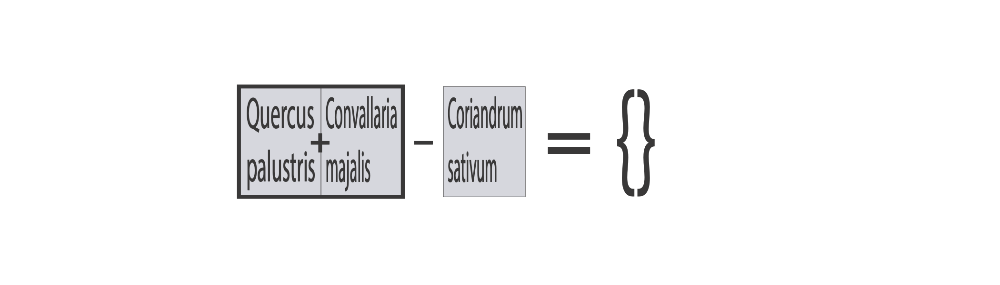
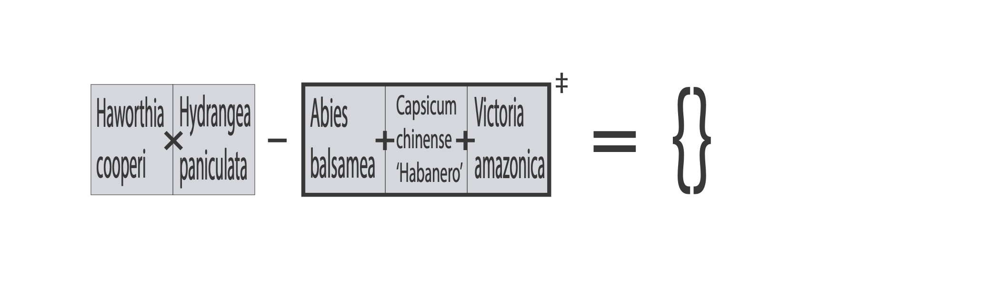
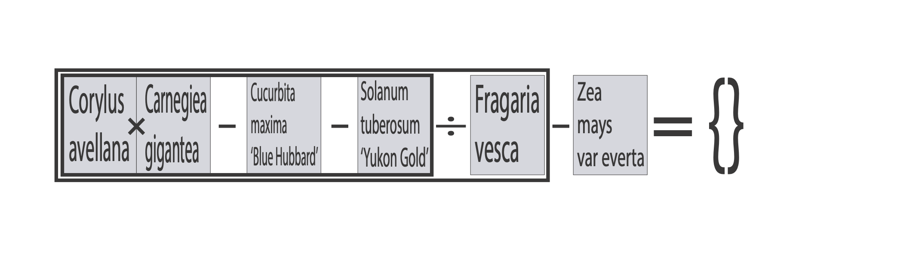
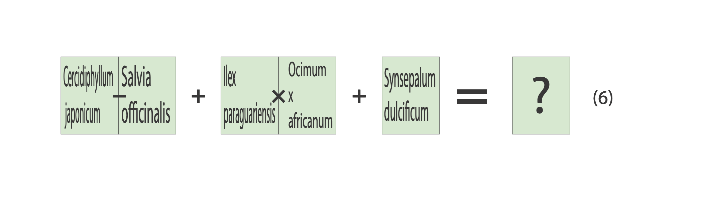
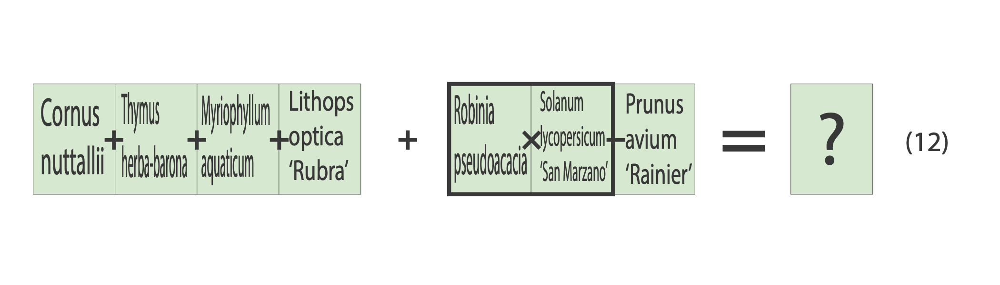
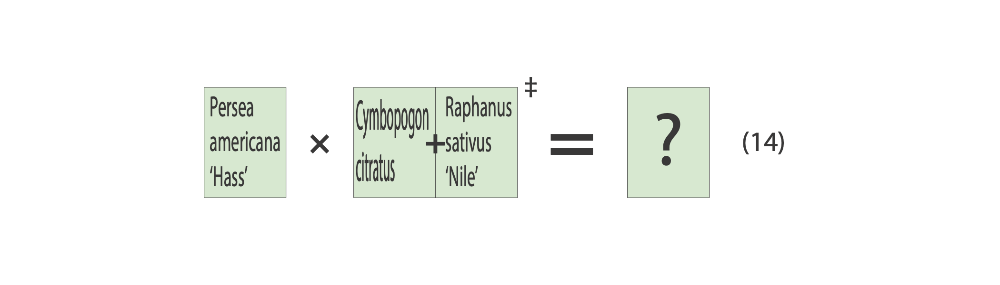
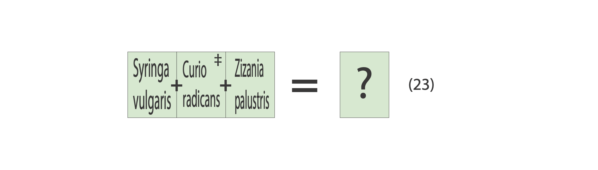
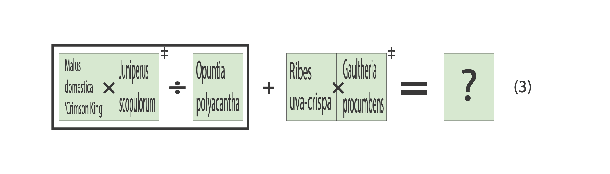
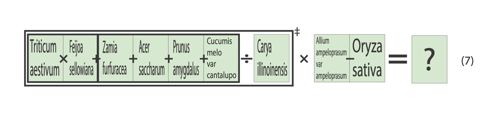
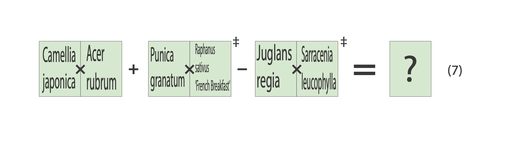

Welcome to the Experimental Community Garden. Though “community” is stretching it a bit. Our members don’t get along, so I wouldn't describe us as commutative. On the other hand, innovation is a strength here. We’re not sure anyone else operates the same way.
Over here you can see the most recent set of experiments by the gardeners, though I seem to have lost the results. No matter, I'm sure we can get to them somehow.
The first three are the example experiments for new gardeners. They don't actually go anywhere, but they can be very elucidating.

A mathematical equation, with phrases in grey boxes instead of numbers. Thick black borders around sections of boxes are here represented by brackets. Groups of boxes without gaps inbetween them are represented by parentheses. [Quercus palustris + Convallaria majalis] - Coriandrum sativum = {}

A mathematical equation, with phrases in grey boxes instead of numbers. Thick black borders around sections of boxes are here represented by brackets. Groups of boxes without gaps inbetween them are represented by parentheses. (Haworthia cooperi × Hydrangea paniculata) - [Abies balsamea + Capsicum chinese 'Habanero' + Victoria amazonica]^‡ = {}

A mathematical equation, with phrases in grey boxes instead of numbers. Thick black borders around sections of boxes are here represented by brackets. Groups of boxes without gaps inbetween them are represented by parentheses. [[(Corylus avellana × Carnegiea gigantea) - Cucurbita maxima 'Blue Hubbard - 'Solanum tuberosum 'Yukon Gold'] ÷ Fragaria vesca] - Zea mays var everta = {}

A mathematical equation, with phrases in green boxes instead of numbers. There is a parenthesized number 6 to the right of the equation. Thick black borders around sections of boxes are here represented by brackets. Groups of boxes without gaps inbetween them are represented by parentheses. (Cercidiphyllum japonicum - Salvia officinalis) + (Ilex paraguariensis × Occimum x africanum) + Synsepalum dulcificum = ?

A mathematical equation, with phrases in green boxes instead of numbers. There is a parenthesized number 12 to the right of the equation. Thick black borders around sections of boxes are here represented by brackets. Groups of boxes without gaps inbetween them are represented by parentheses. (Cornus nuttallii + Thymus herba-barona + Myriophyllum aquaticum + Lithops optica 'Rubra') + ([Robinia pseudoacacia × Solanum lycopersicum 'San Marzano'] - Prunus avium 'Rainier') = ?

A mathematical equation, with phrases in green boxes instead of numbers. There is a parenthesized number 14 to the right of the equation. Thick black borders around sections of boxes are here represented by brackets. Groups of boxes without gaps inbetween them are represented by parentheses. Persea americana 'Hass' × (Cymbopogon citratus + Raphanus sativus 'Nile')^‡ = ?

A mathematical equation, with phrases in green boxes instead of numbers. There is a parenthesized number 23 to the right of the equation. Thick black borders around sections of boxes are here represented by brackets. Groups of boxes without gaps inbetween them are represented by parentheses. (Syringa vulgaris + Curio radicans^‡ + Zizania palustris) = ?

A mathematical equation, with phrases in green boxes instead of numbers. There is a parenthesized number 3 to the right of the equation. Thick black borders around sections of boxes are here represented by brackets. Groups of boxes without gaps inbetween them are represented by parentheses. [(Malus domestica 'Crimson King' × Juniperus scopulorum)^‡ ÷ Opuntia polyacantha] + (Ribes uva-crispa × Gaultheria procumbens)^‡ = ?

A mathematical equation, with phrases in green boxes instead of numbers. There is a parenthesized number 7 to the right of the equation. Thick black borders around sections of boxes are here represented by brackets. Groups of boxes without gaps inbetween them are represented by parentheses. [([Triticum aestivum × Feijoa sellowiana] + [Zamia furfuracea + Acer saccharum + Prunus amygdalus + Cucumis melo var cantalupo]) ÷ Carya illinoinensis]^‡ × (Allium ampeloprasum var ampeloprasum - Oryza sativa) = ?

A mathematical equation, with phrases in green boxes instead of numbers. There is a parenthesized number 7 to the right of the equation. Thick black borders around sections of blocks are here represented by brackets. Groups of boxes without gaps inbetween them are represented by parentheses. (Camellia jaopnica × Acer rubrum) + (Punica granatum × Raphanus sativus 'French Breakfast')^‡ - (Juglans regia × Sarracenia leucophylla)^‡ = ?
Stroll with me up the garden paths. The gardeners have their own way of classifying the plants here, and I must admit I find it quite idiosyncratic. No worse than some taxonomies, to be sure, but the categorization is very much a matter of taste. Sometimes literally.
The plants are idiosyncratic, too. You’d think trees and stems would branch, but around here they don’t. Nothing seems to branch at all.